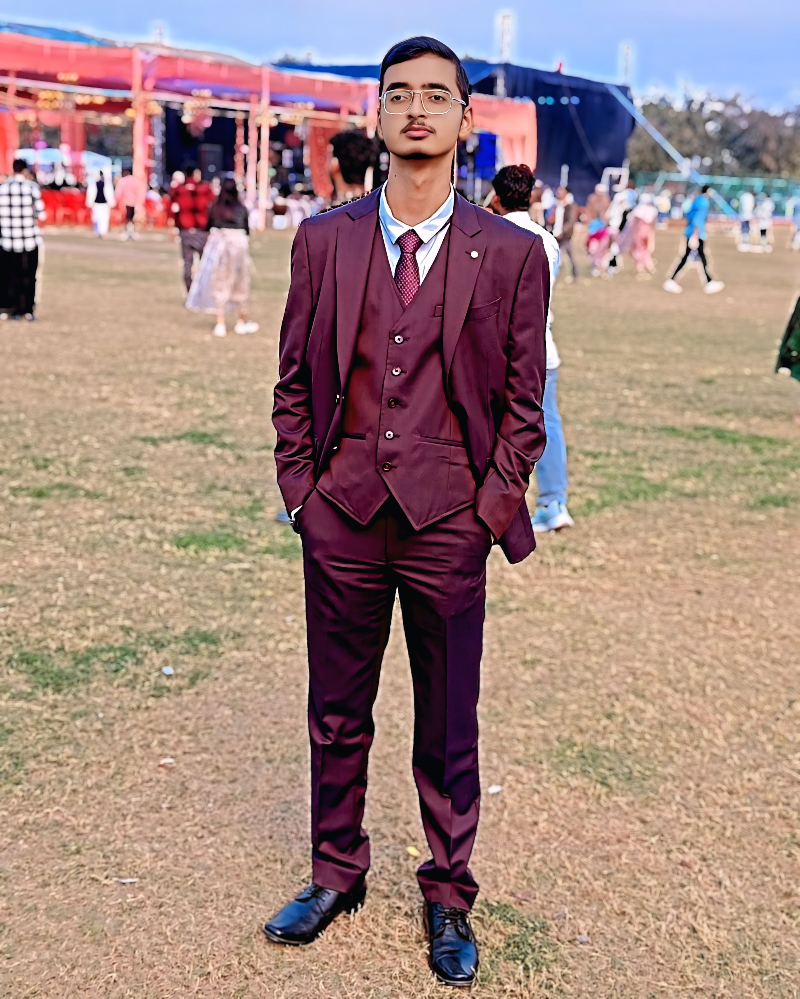

📸 Photo Cropping Tool
How to Crop Your Photo Properly:
- Open the original photo in any image editing software (Paint, Photoshop, GIMP, or online tools like Canva)
- Crop to focus on your face - make sure your face is clearly visible and centered
- Use a square aspect ratio (1:1) since the portfolio uses a circular display
- Include your head and shoulders for the best professional look
- Save as JPG with good quality (around 500x500 pixels is perfect)
- Replace the current MyPhoto.jpg with your cropped version
Current Photo:

⚠️ Important: The current photo appears to have visibility issues. Please crop it to focus on your face clearly.
Recommended Online Tools:
- Canva - Free online photo editor with cropping tools
- Pixlr - Free online Photoshop alternative
- Fotor - Simple online photo editor
- Windows Paint - Built into Windows, can crop photos
After cropping:
- Save the cropped photo as "MyPhoto.jpg"
- Replace the file in your portfolio folder
- Refresh your portfolio page to see the changes